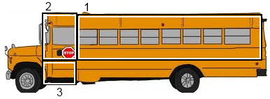

Assumptions: The engine is in the bus, and any storage compartments and filled. Size of bus and balls are unknown. You cannot crush the ping pong balls
Using my last experience of an average sized school bus and my own height as reference to make my best estimation on the total area of the bus. I will then estimate how many pingpong balls are in a cubic foot.
Split the insides of the bus in 3 sections. all the seating, the drivers section and the bottom steps.

Using my height as a guide roughly 5'9", from my back to my knees is aprox 2' feet.
Last time I was on a school bus my knees hit the from of the seat so 2' feet plus 6" inches for the seat.
On average you can fit say 40 people on a school bus, 2 people per seat, 2 seats per row. So 10 rows.
10 * 2.5' = 25'
People who were taller than 6' feet could not stand straight up, the rest could.
a normal bus seats 4 per row and middle section. 1 person with a bit of space would be about 2' feet wide. the aisle part would be about 1 person wide so 5' * 2' = 10'
The Volume of the seating area is
(25'*6'*10') = 1500 cubic feet.
The drivers area length is about 1.5 times the length of a seating area, but only has one seat.
(2.5 ) * 1.5 = 3.75'
The Volume of the driving area is
3.75'*6*10 = 225 cubic feet;
Volume already occupied by objects in the bus.
The Seats in the bus take up volume that ping pong balls cannot occupy.
Drivers Seat
For the estimation we will say the volume of the drivers seat would be roughly the size of Section 3, the extra space for the stairs.
Passenger Seats
So we estimate 6" inches for the length of the back portion of the seat. The back of the seat only goes half way to the roof, but there is also padding for the portion you sit on. We will estimate that the padding from the back and sitting portion would be 6"inches from the floor to the roof.
The seats are only on 4/5 of the bus so
(10 * .5') * ((4/5)*10) * (6) = 240 cubic feet
Total volume in the bus in cubic feet.
VolumeOfSection1 - SeatingVolume + VolumeOfSection2 + (VolumeSection3 - DriverSeatVol) = totalVolume
1500 - 240 + 225 + 0 = 1485 cubic feet.
How many ping pong balls fit in a cubic foot?
A ping pong balls is roughly 1.5 inches in diameter. When packing the ping pong balls in a cube there will be space in between, more than if they were liquid and less than as if they were perfect cubes, so we take an average of the Upper and Lower bound.
Upper Bound where there no space between the balls
(4/3)*pi*(1.5"/2)^3 ~= 1.8" cubed inches
Lower Bound is they are all cubes
12"*12"*12" /(1.8") = 960 ping pong balls
12"*12"*12"/(1.5"^3) = 512 ping pong balls
If we take the average (960+512)/2 = 736 ping pong balls per cubic foot.
(1485)*736 =~ 1,100,000